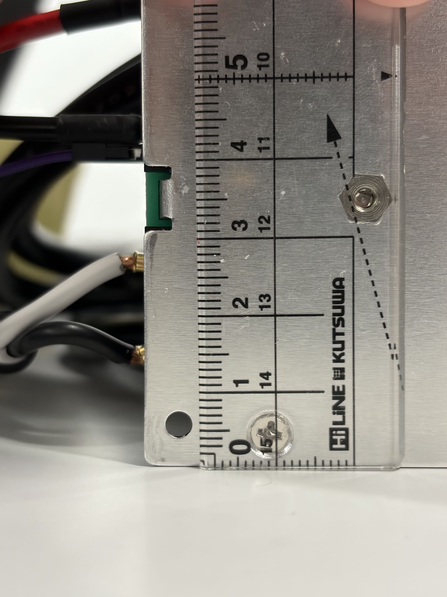
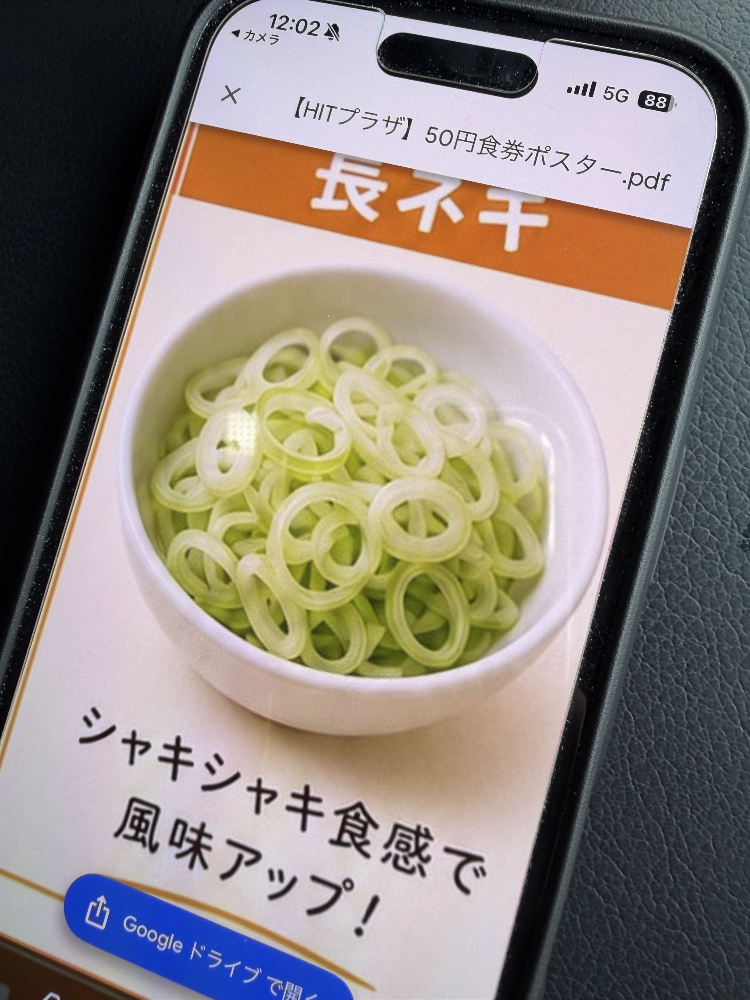
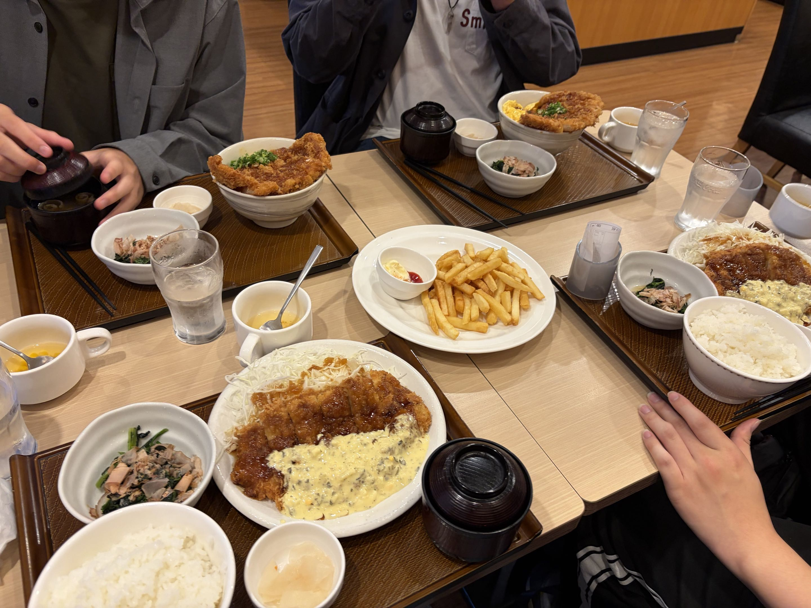
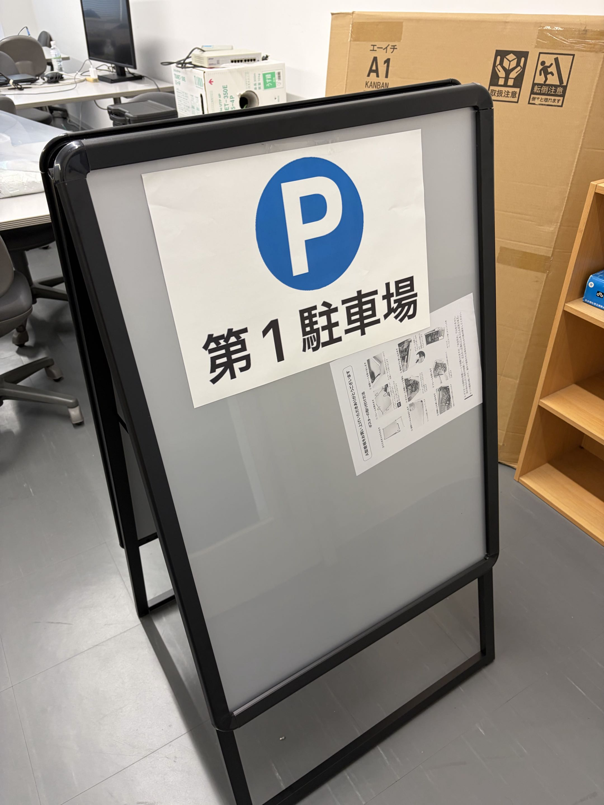
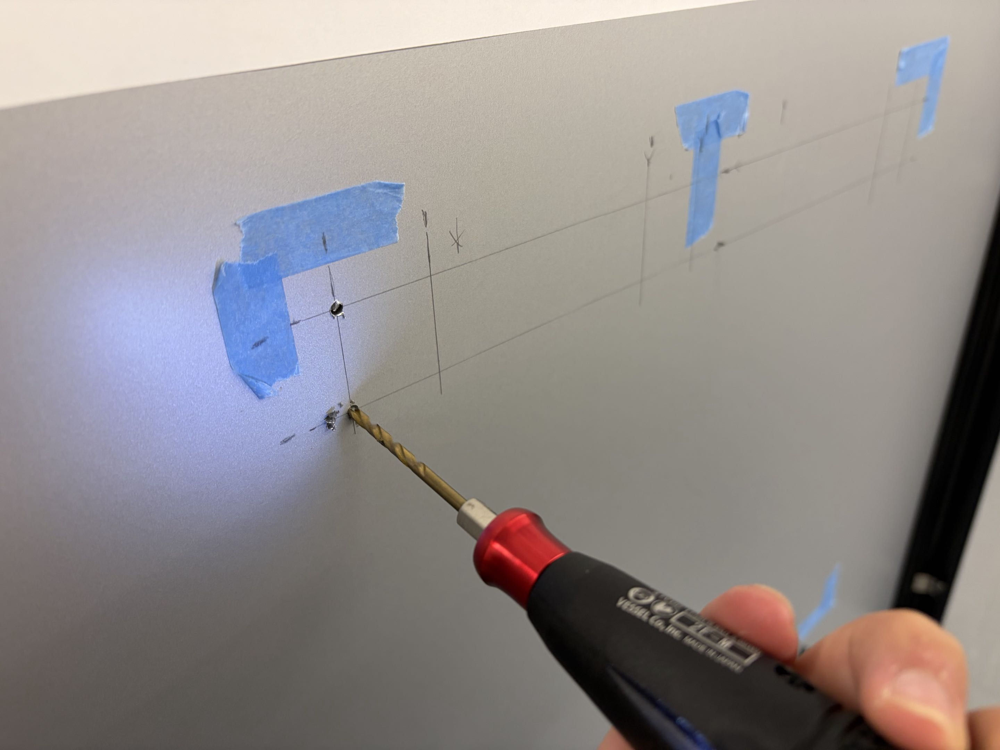

筐体作成の開始
筆者:E
とりあえずスイッチング電源のネジ穴の直径を写真でパシャリ。まあM3とか？ (ちなみに写真の穴使っていない)  友達と車で飲食店に向かっているとき、新しい学食についてのメールが来た。なんだこれ。  最近AI使って画像生成するのが流行っているけど、なんだかなぁ... 別団体の友達2人と合流して、どこぞのチェーン店で社割飯を食った。これガチでうまい。お腹いっぱいすぎてお腹いっぱい。  B1Fと1Fで会計が別だったので領収証が別になってしまった。まあいいけど。 本来1万円で申請していたが、電動ドリルを購入したせいで価格が大きく跳ね上がってしまった。(許しをもらえたのでセーフ？) Pのマークと第1駐車場の文字があるA3用紙が横向きに貼られているだけ。  さっそく穴をあけるのだが、電動ドリルのアタッチメントの直径が小さすぎて買ってきたM4がハマらない。  "混"をオレンジ色で描画してもらおうとしたら、写真で撮るとフリッカー現象で赤と黄色が混ざって見える。(目で見るとちょっとチカチカ？)ネジ穴の直径を調査して、、
なんだこれ。
輪ゴム？
昔ワゴムのアクセサリー作れるやつにハマっていていろいろなバリエーションを取り揃えていたのを思い出した。社割は神
そのあとビバに買い出し
現状の看板はこんな感じ。
こっからマスキングテープとか張りつけて鉛筆で線を引く...
その作業だけだが、下の方の線引きは結構腰が痛い。友達よ、ごめんよ。(2日目頼みまくった。)
仕方ないので別の事でも進めていこう。codexでﾌﾟﾛｸﾞﾗﾐﾝｸﾞ
ガワを完成させる。